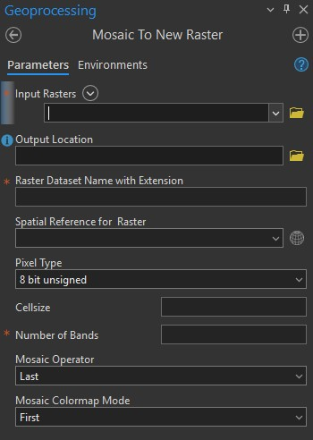

3 Step 1 Define Drainage Basin
For this project I used the 2019 USGS 3DEP MatSu Borough 1-meter Lidar data set. This data can be downloaded from “https://prd-tnm.s3.amazonaws.com/index.html?prefix=StagedProducts/Elevation/OPR/Projects/AK_MatSuBorough_2019_B19/AK_MatSuBorough_B1_2019/TIFF/”
After downloading tiff’s from this link, I used Arc Gis Pro to stitch together the multiple files into a single tiff file. To do this, I used the “Mosaic To New Raster” geoprocessing tool.

Once the new raster is created, I used the “Raster Functions” in Arc to perform a Fill on the raster. This step shouldn’t be overlooked. Using a fill value that is too large will cross drainage boundaries and can lead to catchment areas much larger than reality. When performing this step I will do multiple trials to determine what seems to match reality.
With the sinks of the raster now filled, the next step is to perform a “Flow Direction” raster function. I don’t force the cells to flow outward and I keep the Flow Direction Type as D8.
Now I use the geoprocessing tool “Create Feature Class”